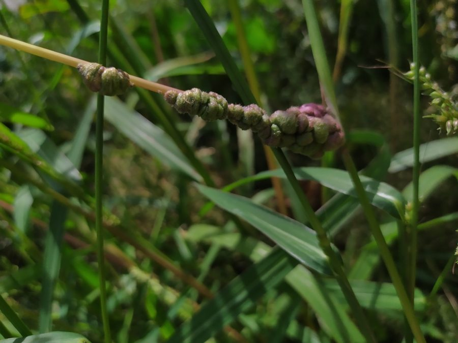

बार्नयार्ड ग्रास स्मटBarnyard Grass Smut
Ustilago trichophora · Ustilaginaceae · FNG-0043

- Scientific name वैज्ञानिक नाम
- Ustilago trichophora (Link) Kunze
- Family कुल
- Ustilaginaceae
- Hindi हिंदी
- बार्नयार्ड ग्रास स्मट
- Local names स्थानीय नाम
- barnyard grass smut, sanwa kandua, samai smut
- Status here यहाँ की स्थिति
- native
- Movement आवागमन
- Resident, here all year
- Known from कहाँ दर्ज
- Others have published records from the wider Awadh–Purvanchal plain, none yet from Basti–Ayodhya अवध–पूर्वांचल से दूसरों के प्रकाशित अभिलेख, बस्ती–अयोध्या से अभी नहीं
- IUCN IUCN
- not evaluated
- Review समीक्षा
- not yet reviewed
When to look कब देखें
Expected mainly in July, August, September, October, November. मुख्यतः जुलाई, अगस्त, सितंबर, अक्टूबर, नवंबर में अपेक्षित।
बार्नयार्ड ग्रास स्मट / Barnyard Grass Smut
Ustilago trichophora (Link) Kunze — Ustilaginaceae
बार्नयार्ड ग्रास स्मट — धान के खेतों की मेड़ों, नालियों तथा नम स्थानों पर उगने वाली साँवाँ घास के पुष्पगुच्छों पर लगने वाला एक कंडुआ कवक। यह कवक घास की बालियों में दानों की जगह काले, धूल भरे बीजाणुओं की थैलियाँ बना देता है। दूर से देखने पर घास की बालियाँ जली हुई कालिख जैसी दिखती हैं। यह कवक हानिकारक खरपतवार साँवाँ घास के बीजों को नष्ट कर उसकी अनियंत्रित बढ़वार को प्राकृतिक रूप से रोकता है।
Quick Identification त्वरित पहचान
| Feature | Description |
|---|---|
| Sorus location | Ovaries, spikelets, and occasional upper leafy bracts of wild barnyard grass |
| Sorus appearance | Swollen, lobed, gall-like dark masses replacing normal floral grains |
| Peridium | Covered initially by a thin, fragile, greyish-white host-derived membrane |
| Spore mass | Powdery, dark olivaceous-brown to purplish-black mass exposed upon rupture |
| Spore shape | Globose to subglobose or broadly ellipsoidal teliospores |
| Spore surface | Densely ornamented with conspicuous sharp echinulate spines or verrucae |
| Host specificity | Strictly confined to wild barnyard grasses (Echinochloa species) |
| Field appearance | Distorted, sooty panicles standing prominently above wetland grassy margins |
Field tip: Walk along the wet bunds of a paddy field in September. Look at the flowering heads of barnyard grass (Echinochloa); swollen spikelets that rupture to release a cloud of dark sooty powder when touched are affected by this smut.
हिंदी — कैसे पहचानें: धान के खेत की मेड़ पर उगी साँवाँ घास की बालियों में दानों की जगह काली कालिख से भरी थैलियाँ बन जाती हैं, जो छूने पर काले पाउडर की तरह बिखरती हैं।
Morphology आकारिकी
Ustilago trichophora is a specialized smut fungus exhibiting well-defined biotrophic gall formation and characteristic teliospore micromorphology:
- Sori: Formed predominantly in the ovaries of host spikelets, occasionally extending to the floral axis and uppermost sheath leaves; swollen into irregular, globose to ellipsoidal galls that completely replace the grain tissues.
- Peridium: The young sorus is enveloped by a pale greyish to silvery-white membranous sheath composed of host epidermal tissue interwoven with fungal hyphae; this protective layer ruptures irregularly at spikelet maturity.
- Teliospores: Powdery, dark reddish-brown to dark olivaceous-brown or sooty black in mass; individually yellowish-brown to dark golden-brown, globose, subglobose to ovoid, thick-walled, densely covered with prominent echinulate spines that project conspicuously from the spore wall.
- Basidium and Sporidia: Upon germination under moist conditions, the diploid teliospore produces a four-celled cylindrical promycelium (basidium); each cell buds off hyaline, single-celled, haploid sporidia capable of saprotrophic budding before forming infectious dikaryotic hyphae.
हिंदी: इस कवक के बीजाणु गोल और कांटेदार दीवारों वाले होते हैं। ये बीजाणु बालियों में काले चूर्ण के रूप में भरे रहते हैं। जब थैली फटती है, तो ये हवा में उड़कर फैल जाते हैं।
Ecology and Substrate पारिस्थितिकी और आधार
Ustilago trichophora is an obligate biotrophic parasite tightly synchronized with the life cycle of wetland graminoids:
- Host range: Parasitizes wild barnyard grass species, primarily Echinochloa crus-galli, Echinochloa colona, and related wild and semi-domesticated millets.
- Tissue infection: Systemic mycelium traverses developing tillers without producing conspicuous foliar deformities until floral initiation, when fungal hyphae aggressively invade ovary primordia.
- Moisture dependency: Teliospore dispersal and subsequent basidiospore germination require abundant environmental water, finding ideal conditions in standing water and seasonal roadside ditches.
- Ecological balance: By converting fertile host ovaries into non-viable smut galls, the fungus significantly reduces the seed output of aggressive agricultural weeds that compete with cultivated rice crops.
हिंदी: यह कवक केवल साँवाँ घास और उससे मिलती-जुलती जलीय घासों पर ही अपना जीवन चक्र पूरा करता है। यह घास के पौधों में भीतर ही भीतर बढ़ता है और फूल आने पर बालियों में काले दाने बनाता है। पानी और नमी में यह सबसे तेजी से फैलता है।
Life Cycle / Phenology जीवन चक्र
The pathogen follows a synchronized annual progression intimately aligned with seasonal wetland hydrology:
| Hydrological Stage | Fungus Activity | Wetland Vegetation Context |
|---|---|---|
| Early Monsoon | Soil-borne teliospores germinate in warm mud; haploid sporidia conjugate to form infectious hyphae | Young Echinochloa weed seedlings emerge along paddy margins |
| Mid-Monsoon | Dikaryotic mycelium grows endophytically inside host shoot apices without causing necrosis | Vigorous vegetative tillering of weed grasses in drainage ditches |
| Late Monsoon | Fungal hyphae proliferate inside newly developing floral ovaries, forming swollen sori | Panicle emergence of barnyard grass; galls become conspicuous |
| Post-Monsoon | Sorus membranes rupture, casting dense clouds of dark teliospores onto wind and water currents | Wild grasses senesce; spores settle into mud and soil crust |
| Winter / Summer | Resistant thick-walled teliospores remain dormant in dry soil or submerged wetland silt | Fallow fields dry out pending the arrival of the next rains |
हिंदी: बरसात के शुरू में मिट्टी में पड़े पुराने बीजाणु अंकुरित होकर घास के नए पौधों में प्रवेश करते हैं। भादों-क्वार में जब घास में बालियाँ निकलती हैं, तब ये काले दानों में बदल जाती हैं और हवा में उड़कर मिट्टी में गिर जाती हैं।
Associated Species and Decay Role सहजीवी प्रजातियाँ और अपघटन
Ustilago trichophora occupies a distinct ecological niche in regional agricultural wetland borders:
- Host species: Infects Barnyard Grass (Echinochloa crus-galli) and wild millets (Echinochloa frumentacea).
- Crop neighbours: Commonly borders cultivated Paddy fields where host grasses compete with the crop for nitrogen and sunlight.
- Ecological biocontrol: Acts as a natural population suppressor of troublesome weed grasses by preventing viable caryopsis maturation.
- Soil integration: Sorus residues and unviable floral gall fragments are incorporated into marshy organic detritus post-monsoon.
हिंदी: यह कवक धान के खेतों के पास उगने वाली जंगली साँवाँ घास पर रहता है। खरपतवार के बीजों को नष्ट करके यह धान की फसल को लाभ पहुंचाता है। इसके अवशेष जमीन पर गिरकर सड़ जाते हैं और मिट्टी में मिल जाते हैं।
Agricultural / Human Relevance कृषि प्रासंगिकता
While not a direct pathogen of major commercial cereals, Ustilago trichophora holds significant indirect agricultural relevance:
- Fungal sign: Sooty black, powdery teliospore masses bursting from swollen floral spikelets of weed grasses.
- Agricultural impact: Reduces the propagation of Echinochloa weed grasses, which represent the foremost weed problem in transplanted and direct-seeded rice in the Gangetic plains.
- Grain contamination: If infected barnyard grass panicles are inadvertently harvested alongside paddy or wild millets, the dark spore dust can discolour grain lots and impart an off-odour.
- Cultural management:
- Rogue and remove flowering barnyard grasses along paddy bunds before the delicate sorus membranes rupture.
- Maintain clean field borders and irrigation channels to restrict weed grass seedbanks.
- Practice thorough wetland puddling and crop rotation to suppress weed grass germination.
हिंदी: यह कवक मुख्य फसलों पर नहीं लगता, बल्कि नुकसानदेह खरपतवार को नियंत्रित करने में प्राकृतिक रूप से मददगार है। यदि धान की कटाई के समय यह घास साथ में कट जाए तो अनाज में काला पाउडर मिल सकता है, इसलिए मेड़ों की सफाई जरूरी है।
Expected Locally स्थानीय रूप से अपेक्षित
Not a field record. Written from published accounts for eastern Uttar Pradesh. No confirmed local sighting yet — if you have seen it, that is what the atlas needs.
अभी तक स्थानीय पुष्टि नहीं। यह विवरण प्रकाशित स्रोतों से है, किसी अवलोकन से नहीं।
GBIF holds published records from the wider Awadh–Purvanchal plain, none yet from Basti–Ayodhya. In Awadh, the fungus is expected in wetland margins, seasonal waterlogged depressions, roadside ditches, and paddy field borders wherever Echinochloa grasses flourish. A confirmed first record requires a clear photograph with place and date submitted through the project portal.
हिंदी: अवध के धान के खेतों की मेड़ों और पानी भरी नालियों के किनारे यह कवक आसानी से मिल सकता है। पुष्टि के लिए काली कालिख वाली घास की बाली की तारीख सहित तस्वीर भेजें।
Distribution वितरण
Global range: Widespread in warm temperate, subtropical, and tropical regions across Africa, Asia, Europe, and the Americas.
In India: Recorded from northern and central states where barnyard grasses flourish (Bilgrami et al. 1979).
In Uttar Pradesh: Known from wetland tracts and paddy borders across the Gangetic plain.
In Basti district / eastern UP: Expected along wet paddy bunds, ditches, and seasonal marsh margins during the post-monsoon.
हिंदी: यह कवक विश्व भर के गर्म और नमी वाले इलाकों में पाया जाता है जहाँ साँवाँ घास उगती है। उत्तर प्रदेश में धान के खेतों और ताल-तलैयों के किनारे यह आम तौर पर देखा जा सकता है।
Research Questions शोध प्रश्न
- What proportion of Echinochloa seed output is suppressed by natural smut infection along typical Awadh paddy bunds?
- How long do echinulate teliospores remain viable when buried under flooded paddy mud compared to dry roadside soils? / क्या धान के खेत की कीचड़ में दबे रहने पर बीजाणुओं की जीवनक्षमता शुष्क मिट्टी की तुलना में घट जाती है?
- Does the incidence of smut infection vary significantly between direct-seeded and transplanted rice field borders?
- Which dipteran or coleopteran insects visit the ruptured sooty sori during the post-monsoon flowering period? / क्या स्थानीय कीट पकी हुई बालियों से बीजाणुओं के प्रसार में सहायक होते हैं?
- Can endemic strains of this smut be evaluated as targeted biological weed control formulations for lowland paddy systems?
Similar Species मिलती-जुलती प्रजातियाँ
| Species | Host Plant | Sorus Location | Teliospore Ornamentation | |
|---|---|---|---|---|
| Ustilago trichophora | Echinochloa spp. | Ovaries and spikelets | Prominently echinulate with sharp spines | |
| Ustilago crameri | Setaria italica | Floral spikelets | Smooth to faintly verruculose walls | |
| Ustilago hordei | Hordeum vulgare | Entire [[barley\ | barley]] spikelet | Completely smooth-walled |
Field rule: Note the host grass and spore wall spines: sooty galls on Echinochloa spikelets with prominently spiny echinulate teliospores characterize Ustilago trichophora.
हिंदी: साँवाँ घास की बालियों में काले कंडुआ दाने और कांटेदार बीजाणु इस कवक की खास पहचान हैं। काँगनी पर लगने वाले कंडुआ के बीजाणु चिकने होते हैं।
Taxonomy & Classification वर्गीकरण
Original description. Described as Caeoma trichophorum by Heinrich Friedrich Link in 1825 and transferred to the genus Ustilago by Gustav Kunze in 1830 (Flora oder Botanische Zeitung, Regensburg, 13, p. 369).
Subspecies. Monotypic — no subspecies are currently recognised.
Family and order placement. Belongs to the family Ustilaginaceae within the order Ustilaginales, class Ustilaginomycetes, phylum Basidiomycota.
Phylogenetic notes. Molecular studies of the Ustilaginales place Ustilago trichophora within the core Ustilago clade infecting Panicoid grasses.
IUCN status rationale. Not evaluated globally by the IUCN Red List. It is a widespread native biotrophic microfungus with no known conservation threats.
हिंदी: इसका वैज्ञानिक विवरण 1830 में गुस्ताव कुन्ज़ द्वारा दिया गया था। यह बेसिडिओमाइकोटा प्रभाग का सदस्य है और प्राकृतिक रूप से सुरक्षित है।
Photo Gallery फोटो गैलरी
No photos yet — add field photos to media/species/barnyard_grass_smut/ and run node scripts/sync_photos.js.
Photos needed आवश्यक फोटो
- [ ] Swollen sooty smut galls replacing normal spikelets on barnyard grass panicle (घास की बाली पर काली कालिख)
- [ ] Ruptured sorus showing black powdery teliospore release (बीजाणु थैलियों का फटना)
- [ ] Habitat shot of infected barnyard grasses growing along a paddy bund (धान की मेड़ पर उगी संक्रमित घास)
References संदर्भ
- Kunze, G. (1830). Flora oder Botanische Zeitung, Regensburg, 13, p. 369.
- Bilgrami, K. S., Jamaluddin & Rizwi, M. A. (1979). The Fungi of India, Part I. Today & Tomorrow's Printers & Publishers, New Delhi.
- GBIF Occurrence Data — Ustilago trichophora, India (2025).
Source file: species/fungi/molds/barnyard_grass_smut.md